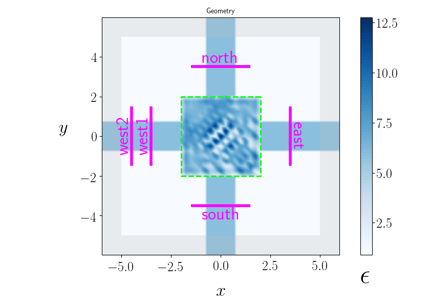
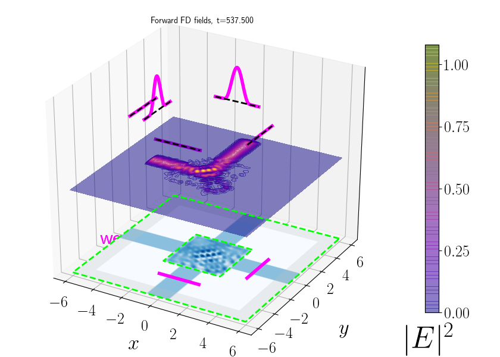

meep.adjoint.Visualization:¶
Easy, standardized pymeep visualization routines¶
that just work¶
The meep.adjoint python module implementing
meep adjoint solver includes
an extensive set of tools for graphical visualization
of meep sessions via
matplotlib.
Although these tools are packaged with and used by
meep.adjoint, they are independent of the adjoint solver
and can be used for convenient visualization of any python-driven
meep session---indeed, it is a specific
goal of the module that the visualization routines can
be invoked, with no arguments, on any meep geometry
and will do something reasonable and useful in every case.
These and other objectives of the initiative are described in the first section below, after which we present examples to illustrate the three key types of plot produced by the module and how the default options can be customized.
tl;dr documentation for
meep.adjoint.visualize
Motivation: Plotting is much too hard in meep, especially at the lower end where you just want something quick and easy to let you sanity-check your geometry. This module attempts to provide some simple functions that should just work in most cases to provide some graphical intuition for what you're working with. The spirit of the module is to provide functions that can be called with no customization options whatsoever and will do useful relevant things by default, but which can also be customized in cases where you do want to take the time to spruce up the output.
Visualizing geometries before timestepping. Call
visualize_simto view your simulation prior to timestepping:from meep.adjoint import visualize_sim sim=mp.simulation(...) # insert code for adding DFT cells here visualize_sim(sim)
- Visualizing frequency-domain fields after timestepping. Call
visualize_sim(same function, same no arguments!) after timestepping to view frequency-domain (DFT) fields superposed atop the geometry; the function automatically looks inside thesimulationto determine what frequency-domain fields are available to plot.sim.run(until=200) visualize_sim(sim)
Real-time visualization of time-domain fields during timestepping. Use
AFEClientto define a custom-made step function that intermittently updates a plot of time-domain fields in real time as your meep timestepping run progresses.from meep.adjoint import AFEClient step_funcs=[ AFEClient(sim, ['Ez'], interval=2) ] sim.run(*step_funcs, until=200)Here are movies of what this produces for the holey waveguide geometry, showing an incident eigenmode field propagating across a waveguide with and without a hole in it.
Without hole:
Ez2WithoutHole.h264With hole:
Ez2WithHole.h264
Motivation and Philsophy
a,b. (a couple of longer-winded discussions culminating in) the
c. The motivating desiderata for
meep.adjoint.VisualizationEasy visualization of simulation geometries before timestepping:
visualize_simEasy real-time animation of time-domain fields during meep computations:
AFEClientandAFEServerEasy visualization of frequency-domain fields---in isolation or superposed atop your material geometry
Customization:*
Motivation and philosophy¶
Skip down to the
tl;drversion of the motivation and goals of this initiative, or click to expand the tabs below for a longer-winder account.
The error-checking power of visual sanity checks for text-defined geometries
The fact that every aspect of a meep calculation---from the material geometry, to the absorbing boundaries, to the placement and orientation of the sources, to the positions and sizes of the flux monitors---is defined by lines of text in script files offers a welcome change of pace from the immersive GUI experience of commercial CAD tools, as well as a natural platform for complex, 0ustomized calculations that would be unwieldy or impossible to launch from a point-and-click pull-down interface. Nonetheless, as convenient as it is to specify geometries non-graphically, it's also quite useful---arguably even essential---to review a graphical representation of the geometry you input as interpreted by meep, both to confirm that your input was processed as you expected and to catch the sorts of inadvertent errors---a flux monitor in the wrong place, a source pointing the wrong direction---that are all too easy to overlook in your python script, but instantly obvious upon visual inspection.
In addition to the usefulness of visual sanity checks on your input geometry, it can be helpful to look at graphical visualizations of the electric and magnetic fields computed by meep---both the time-domain and the frequency-domain fields---and in particular to review how the field distributions evolve in space in the presence of your material geometry. This is true even though, in many cases, the ultimate desired output of your calculation will be non-graphical, sucha a number---a power flux, an eigenmode coefficient, etc---whose computation, again, will be described by lines of text you write in a script file. If the calculation works correctly as you wrote it and you get a reasonable numerical output on your first try, well, bully for you! You have no need of graphical visualization aids. For the rest of us---who can't figure out why our flux is 10 orders of magnitude too small until we look at the time-domain power flow and realize we set things up backward, so that all the excitation power flows promptly out of, not into, the computational cell---visualization tools can be a lifesaver.
Wait, isn't this a solved problem?
So we're agreed that visualization---of both inputs (geometries) and outputs (fields)---is a good thing. But isn't this a solved problem? After all, meep offers plenty of routines for retrieving as much raw data on geometries and fields as any user could want---and, once one has the raw data, it's just a matter of choosing from among the infinitude of available tools for plotting and visualization. Indeed, already within the meep documentation itself one can find many different types of visualization generated by many different types of tool. What more is left to say?
Wanted: Quick, easy, standard visualization paradigms that just work on any geometry
Despite the arguably non-issue status of the situation, I would argue that the current situation is suboptimal in at least two ways.
-
(a) The absence of a single, canonical solution means that, as a meep user, every time you feel the urge to visualize something you have to spend some time and effort figuring out how you are going to do it---and then going through the hassle of setting that up. In my experience, this was especially true when it came to making movies of the evolution time-domain fields---although the problem had been solved with documentation a couple of times in the manual, still somehow it felt like a major chore to set this up every time I wanted it.
-
(b) On a different note, the absence of generally-accepted visualization protocols means that everybody's visualizations look different. This is not necessarily tragic, and we wouldn't want to enforce sterile conformity, but it might be nice if there were some notion of "canonical meep visualization format" to serve as a common language.
meep.adjoint.Visualization
With all of that by way of backstory, here were the guidelines that motivated the design of these routines.
-
They should fully address the three everyday situations that cry out most urgently for visualization support, namely
-
Simulation geometry before timestepping. A static image of the simulation geometry at the begininng of the calculation, before timestepping has begun. The important targets for visualization are the following items and their relative positioning vis-a-vis one another: (a) the material geometry, (b) the absorbers, &lparen;c) the location and nature of sources, (d) the position and size of any DFT cells in which frequency-domain fields are to be computed.
-
Time-domain fields during timestepping. An animation or movie showing the time-domain fields evolving throughout the timestepping. For one thing, this tells you instantly when you have e.g. oriented your source backwards or otherwise misconfigured something obvious---you sit and watch all of your "input" power go flying right out of the cell to the left instead of proceeding rightward into the center like you intended---whereas the frequency-domain plots produced even by such totally misbegotten simulations can be pretty effective at obscuring even obvious culprits.
Also, after all, the ability to observe essentially time-domain phenomena is one of the key reasons to use an FDTD tool in the first place; many frequency-domain problems can be solved much more efficiently by frequency-domain solvers than by something like meep, but they don't produce nice movies showing e.g. reflection and diffraction of wave packets from interfaces. So it seems particularly unfortunate for a time-domain-solver like meep to offer no easy built-in functionality for animating time-domain field evolutions.
-
Frequency-domain fields after timestepping. A static image showing the amplitudes of frequency-domain fields in regions of DFT cells, with the spatial distributiono of Poynting flux plotted for DFT flux cells.
A central goal of this module is to provide reliable, easy-to-use routines for
each of the aforementioned purposes. -
-
They should offer a hierarchy of customizability options for users at different places on the willingness-to-suffer-for-their-art spectrum. Of course, the goals outlined above---routines that are easy to use and just work---suggest an implementation strategy in which the tools make all the artistic decisions for you; the easiest calling convention to remember is the one with no parameters. However, one of the nice things about the matplotlib backend is how very extremely customizable it is, and it shouldn't be hard to pass at least some of those options on to users of
meep.adjoint.Visualization.In view of these considerations, the goal of the routines is to offer a three-tiered hierarchy of customizability levels.a. Zero-effort calling model for lazy forgetful slackers
For users who can't be bothered to memorize or look up library function prototypes---or who just want quick and dirty visualization at the prototyping stage with the option to clean up later---it should be possible to call the visualization routines on just the
simulationentity alone with no configuration arguments whatsoever, with the module making reasonable choices to produce helpful graphics in a standardized format.b. Minimal-effort calling model for the slightly more motivated
For users who fall basically into the previous bucket but are motivated to change one or another option that otherwise obstructs the visualization (like, label font size too large), there should be an easy way to configure global settings once, after which the user can proceed lazily to call all visualization routines with no customization arguments.
c. Full-customization calling model for diligent nitpickers:
Finally, for users who do want to invest time and effort to configure plotting options to their liking, the visualization module should provide copious customization options to allow as much as possible of the visualization to be customized.
2. Easy visualization of simulation geometries before timestepping: visualize_sim¶
As described above, the first visualization task we consider
is that of double-checking the various geometric inputs
supplied to pymeep when creating a
simulation:
the computational cell and material geometry, the absorbing boundaries, the exciting sources,
and any DFT cells for which we requested tabulation of frequency-domain fields. Also described
above was the imperative that, to ensure a maximally memorable calling convention,
the visualization routine be callable on just the simulation class itself with no
other parameters required.
These objectives are satisfied by the visualize_sim routine in meep.adjoint.Visualization,
whose calling convention is precision-engineered to be as painless as possible: after
creating a pymeep simulation
through a call like sim=mp.simulation(geometry=...),
you can simply say
visualize_sim(sim)
and voilà! A new plot window sprouts open to reveal your simulation in all its glory, looking something like this: